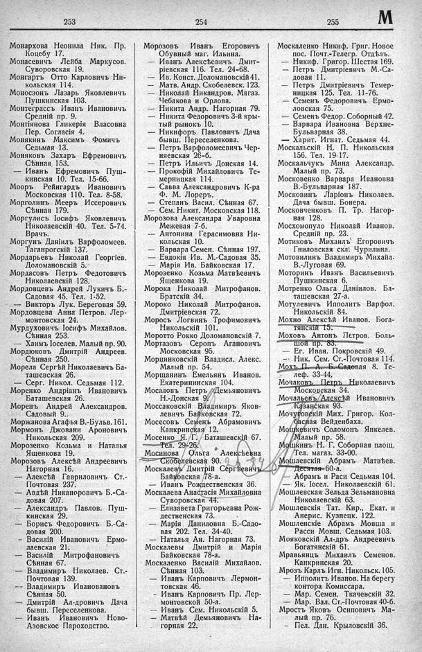

Лист источника 435
Скан

Распознанный текст
253
Монархова Неонила Ник. Пр.
Коцебу 17.
Монасевичъ Лейба Маркусов.
Суворовская 19.
Монгартъ Отто Карловичъ Ни-
кольская 114.
Моноссонъ Лазарь Яковлевичъ
Пушкинская 103.
Монтеграссъ Иванъ Ивановичъ
Средній пр. 9.
Монтіянова Гликерія Власовна
Пер. Согласія 4.
Монякинъ Максимъ Фомичъ
Седьмая 13.
Моняковъ Захаръ Ефремовичъ
Сѣнная 153.
— Иванъ Ефремовичъ Пуш-
кинская 10. Тел. 15-66.
Мооръ Рейнгардъ Ивановичъ
Московская 110. Тел. 8-58.
Морголинъ Мееръ Иссеровичъ
Сѣнная 179.
Моргулисъ Іосифъ Яковлевичъ
Николаевскій 40. Тел. 5-74.
Врачъ.
Моргунъ Даніилъ Варѳоломеев.
Таганрогскій 137.
Мордарьевъ Николай Георгіев.
Доломановскій 5.
Мордасовъ Петръ Федотовичъ
Николаевскій 128.
Мордовцевъ Андрей Лукичъ Б.-
Садовая 45. Тел. 1-52.
— Викторъ Лук. Береговая 59.
Мордовцева Анна Петров. Лер-
монтовская 24.
Мурдуховичъ Іосифъ Михайлов.
Сѣнная 253.
— Хаимъ Іоселев. Малый пр. 90.
Мордюковъ Дмитрій Андреев.
Сѣнная 250.
Морела Сергѣй Николаевичъ Ба-
ташевская 26.
— Серг. Никол. Седьмая 112.
Моренко Андріанъ Ивановичъ
Баташевская 26.
Моренъ Андрей Александров.
Садовый 9.
Моржанова Агафья В.-Бульв. 161.
Мормонъ Джовани Ароновичъ
Никольская 209.
Морозенко Козьма и Наталья
Ященкова 19.
Морозовъ Алексѣй Андреевичъ
Нагорная 16.
— Алексѣй Гавриловичъ Ст.-
Почтовая 237.
— Авдѣй Никаноровичъ Б.-Са-
довая 207.
— Александръ Павлов. Пуш-
кинская 29.
— Борисъ Федоровичъ Б.-Са-
довая 200.
— Василій Ивановичъ Ермо-
лаевская 21.
— Василій Митрофановичъ
Сѣнная 67.
— Владимиръ Николаев. Ст.-
Почтовая 139.
— Владимиръ Ивановановъ
Сѣнная 50.
— Дмитрій Ал-дровичъ Дача
бывш. Переселенкова.
— Иванъ Ивановичъ Ново-
Азовское Пароходство.
254
Морозовъ Иванъ Егоровичъ
Обувный маг. Ильина.
— Иванъ Алексѣевичъ Дмит-
ріевская 116. Тел. 24-68.
— Ив. Конст. Доломановскій 41.
— Матв. Андр. Скобелевск. 123.
— Николай Никандров. Магаз.
Чебакова и Орлова.
— Никита Андр. Нагорная 79.
— Никита Федоровичъ 3-й кры-
тый рынокъ 10.
— Никифоръ Павловичъ Дача
бывш. Переселенкова.
— Петръ Варфоломеевичъ Чер-
няевская 26-б.
— Петръ Ильичъ Донская 14.
— Прокофій Михайловичъ Те-
мерницкая 114.
— Савва Александровичъ К-ра
ф. М. Лореръ.
— Степанъ Васил. Сѣнная 67.
— Сем. Никит. Московская 118.
Морозова Александра Уваровна
Межевая 7-б.
— Антонина Герасимовна Ни-
кольская 10.
— Варвара Семен. Сѣнная 197.
— Евдокія Ив. М.-Садовая 35.
— Марія Ив. Байковская 17.
Морозенко Козьма Матвѣевичъ
Ященкова 19.
Морока Николай Митрофанов.
Братскій 34.
Мороко Николай Митрофанов.
Дмитріевская 72.
Моросъ Логвинъ Трофимовичъ
Никольскій 101.
Моротто Рокко Доломановскій 7.
Мортазовъ Серопъ Агановичъ
Московская 95.
Морцинковскій Владисл. Алекс.
Малый пр. 54.
Морщанинъ Емельянъ Иванов.
Екатерининская 104.
Мосаловъ Петръ Демьяновичъ
Н.-Донская 9.
Моссаковскій Владимиръ Яков-
левичъ Байковская 72.
Мосесовъ Семенъ Абрамовичъ
Канкринская 12.
Мосенко Я. Г. Баташевскій 67.
Тел. 29-26.
Мосинова Ольга Алексѣевна
Скобелевская 90.
Москалевъ Дмитрій Сергѣевичъ
Байковская 78-а.
— Иванъ Рождественская 36.
Москалева Анастасія Михайловна
Суворовская 44.
— Елизавета Григорьевна Рож-
дественская 73.
— Марія Даниловна Б.-Садо-
вая 202. Тел. 34-40.
— Наталья Ан. Нагорная 73.
Москалевы Дмитрій и Марія
Байковская 78-а.
Москаленко Василій Михайлов.
Сѣнная 103.
— Иванъ Карповичъ Лермон-
товская 46.
— Иванъ Карповичъ Пр. Лер-
монтовской 50-а.
— Иванъ Сем. Никольскій 5.
— Матвѣй Демьяновичъ На-
горная 22.
255 M
Москаленко Никиф. Григ. Новое
пос. Почт.-Телегр. Отдѣлъ.
— Никиф. Григор. Шестая 169.
— Петръ Дмитріевичъ М.-Са-
довая 11.
— Петръ Дмитріевичъ Темер-
ницкая 125. Тел. 11-76.
— Семенъ Федоровичъ Ермо-
ловская 75.
— Семенъ Федор. Соборный 42.
— Варвара Ивановна Верхне-
Бульварная 38.
— Харит. Игнат. Седьмая 44.
Москальскій Н. П. Никольская
156. Тел. 19-17.
Москальчукъ Мина Александр.
Малый пр. 73.
Московенко Варвара Ивановна
В.-Бульварная 187.
Московинъ Ларіонъ Николаев.
Дача бывш. Бонера.
Московченковъ П. Тр. Нагор-
ная 128.
Москомопуло Николай Иванов.
Средній пр. 23.
Мотиковъ Михаилъ Егоровичъ
Гниловская скл. Чурилина.
Мотовилинъ Владимиръ Михайл.
В.-Луговая 69.
Моторинъ Иванъ Васильевичъ
Пушкинская 6.
Мотренко Ольга Даніилов. Ба-
ташевская 27-а.
Мотулевичъ Ипполитъ Варфол.
Никольскій 84.
Мохно Алексѣй Иванов. Бога-
тянскій 15.
Моховъ Антонъ Петров. Боль-
шой пр. 83.
— Ег. Иван. Покровскій 49.
-- Ник. Сем. Ст.-Почтовая 114.
Мохъ П. А. Б.-Садовая 8. Те-
леф. 33-44.
Мочаковъ Петръ Николаевичъ
Московская 34.
Мочальевъ Алексѣй Ивановичъ
Казанская 93.
Мочуговскій Мих. Григор. Кол-
басная Вейденбаха.
Мошкевичъ Соломонъ Янкелев.
Малый пр. 58.
Мошкинъ Н. Г. Соборная площ.
Тел. магаз. 33-00.
Мошлевскій Абрамъ Матвѣев.
Десятая 60-а.
— Абрамъ и Раси Седьмая 104.
— Як. Іосел. Николаевскій 61.
Мошлевская Зельда Зельмановна
Николаевскій 63.
Мошлевскія Тат. Кир., Екат. и
Анерис. Кузнецк. 122.
Мошленскіе Абрамъ Мовша и
Расси Мовш. Седьмая 103.
Мояковскій Ал-дръ Андреевичъ
Богатянскій 61.
Мравьянцъ Михаилъ Семенов.
Канкринская 20.
Мрозъ Карлъ Игн. Никольск. 105.
— Ипполитъ Иванов. На берегу
контора Комиссара.
— Мар. Семен. Ткачевскій 32.
— Мар. Вал. Ст.-Почтовая 40-б.
Мрость Яковъ Осиповичъ Ма-
лый пр. 76.
- Пел. Дан. Крыловскій 36.